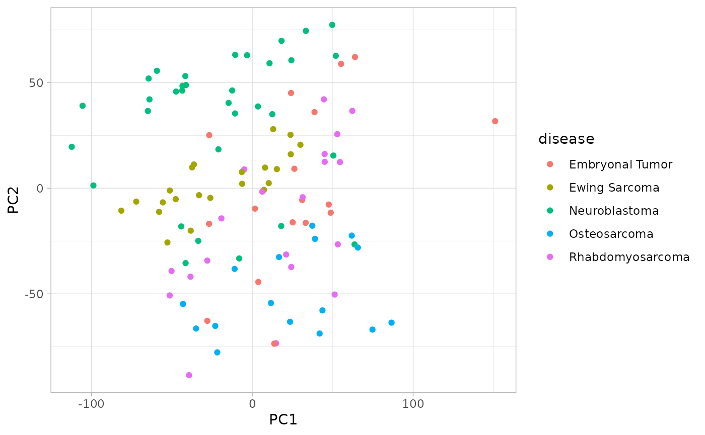
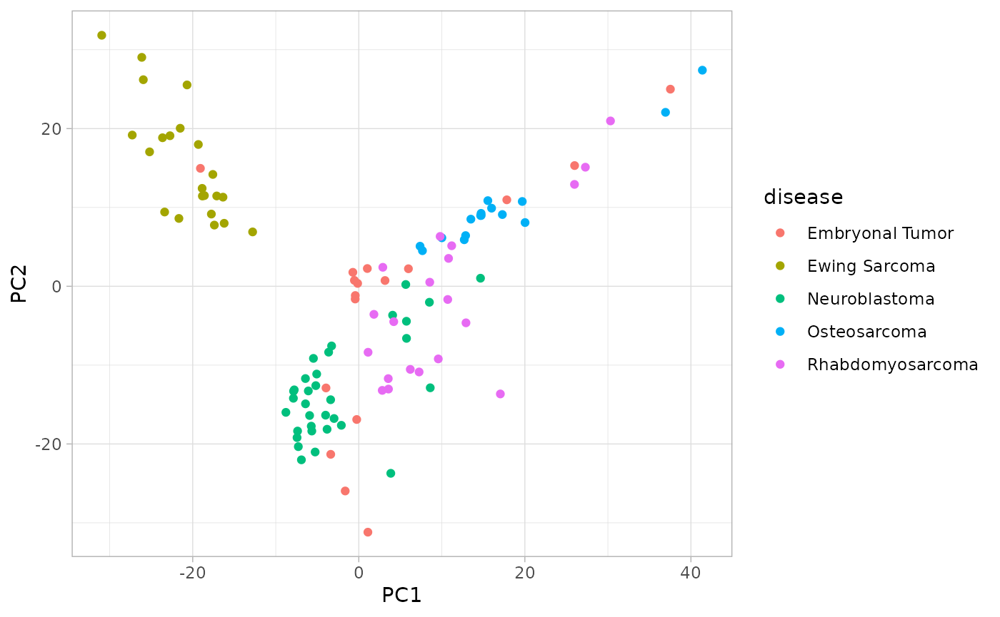

library(dplyr)
library(ggplot2)
library(recipes)
library(scimo)
theme_set(theme_light())
data("pedcan_expression")Dataset
pedcan_expression contains the expression of 108 cell
lines from 5 different pediatric cancers. Additionally, it includes
information on the sex of the original donor, the type of cancer it
represents, and whether it is a primary tumor or a metastasis.
pedcan_expression
#> # A tibble: 108 × 19,197
#> cell_line sex event disease A1BG A1CF A2M A2ML1 A3GALT2 A4GALT A4GNT
#> <chr> <chr> <chr> <chr> <dbl> <dbl> <dbl> <dbl> <dbl> <dbl> <dbl>
#> 1 143B Fema… Prim… Osteos… 3.02 0.0566 2.78 0 0 2.13 0
#> 2 A-673 Fema… Prim… Ewing … 4.87 0 2.00 3.19 0.0841 4.62 0.189
#> 3 BT-12 Fema… Prim… Embryo… 3.52 0.0286 0.111 0 0 2.32 0.0704
#> 4 BT-16 Male Unkn… Embryo… 3.51 0 0.433 0.0144 0 1.54 0.0144
#> 5 C396 Male Meta… Osteos… 4.59 0 0.956 0 0 5.10 0
#> 6 CADO-ES1 Fema… Meta… Ewing … 5.89 0 0.614 0.379 0.0704 6.60 0.151
#> 7 CAL-72 Male Prim… Osteos… 4.35 0.0426 0.333 0 0 0.614 0
#> 8 CBAGPN Fema… Prim… Ewing … 4.87 0.0976 1.33 0.111 0 0.722 0.0704
#> 9 CHLA-06 Fema… Unkn… Embryo… 5.05 0 0.124 0 0 0.848 0.138
#> 10 CHLA-10 Fema… Unkn… Ewing … 5.05 0.0144 0.949 1.73 0.0704 0.506 0.0704
#> # ℹ 98 more rows
#> # ℹ 19,186 more variables: AAAS <dbl>, AACS <dbl>, AADAC <dbl>, AADACL2 <dbl>,
#> # AADACL3 <dbl>, AADACL4 <dbl>, AADAT <dbl>, AAGAB <dbl>, AAK1 <dbl>,
#> # AAMDC <dbl>, AAMP <dbl>, AANAT <dbl>, AAR2 <dbl>, AARD <dbl>, AARS1 <dbl>,
#> # AARS2 <dbl>, AARSD1 <dbl>, AASDH <dbl>, AASDHPPT <dbl>, AASS <dbl>,
#> # AATF <dbl>, AATK <dbl>, ABAT <dbl>, ABCA1 <dbl>, ABCA10 <dbl>,
#> # ABCA12 <dbl>, ABCA13 <dbl>, ABCA2 <dbl>, ABCA3 <dbl>, ABCA4 <dbl>, …
count(pedcan_expression, disease, sort = TRUE)
#> # A tibble: 5 × 2
#> disease n
#> <chr> <int>
#> 1 Neuroblastoma 33
#> 2 Ewing Sarcoma 22
#> 3 Rhabdomyosarcoma 20
#> 4 Embryonal Tumor 17
#> 5 Osteosarcoma 16Dimension reduction
One approach to exploring this dataset is by performing PCA.
rec_naive_pca <-
recipe(pedcan_expression) %>%
update_role(-cell_line) %>%
step_zv(all_numeric_predictors()) %>%
step_normalize(all_numeric_predictors()) %>%
step_pca(all_numeric_predictors()) %>%
prep()
rec_naive_pca %>%
bake(new_data = NULL) %>%
ggplot() +
aes(x = PC1, y = PC2, color = disease) +
geom_point()
To improve the appearance of PCA, one can precede it with a feature
selection step based on the coefficient of variation. Here,
step_select_cv keeps only one fourth of the original
features.
rec_cv_pca <-
recipe(pedcan_expression) %>%
update_role(-cell_line) %>%
step_select_cv(all_numeric_predictors(), prop_kept = 1/4) %>%
step_normalize(all_numeric_predictors()) %>%
step_pca(all_numeric_predictors()) %>%
prep()
rec_cv_pca %>%
bake(new_data = NULL) %>%
ggplot() +
aes(x = PC1, y = PC2, color = disease) +
geom_point()
The tidy method allows to see which features are
kept.
tidy(rec_cv_pca, 1)
#> # A tibble: 19,193 × 4
#> terms cv kept id
#> <chr> <dbl> <lgl> <chr>
#> 1 A1BG 0.371 FALSE select_cv_8HfdV
#> 2 A1CF 4.60 TRUE select_cv_8HfdV
#> 3 A2M 1.69 TRUE select_cv_8HfdV
#> 4 A2ML1 2.45 TRUE select_cv_8HfdV
#> 5 A3GALT2 2.37 TRUE select_cv_8HfdV
#> 6 A4GALT 0.979 FALSE select_cv_8HfdV
#> 7 A4GNT 1.53 FALSE select_cv_8HfdV
#> 8 AAAS 0.0934 FALSE select_cv_8HfdV
#> 9 AACS 0.194 FALSE select_cv_8HfdV
#> 10 AADAC 3.40 TRUE select_cv_8HfdV
#> # ℹ 19,183 more rows